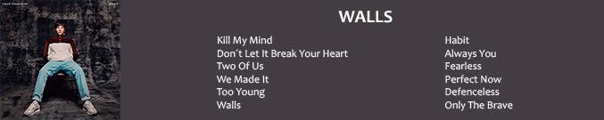

LOUIS TOMLINSON

Louis William Tomlinson nació en Doncaster, Reino Unido, el 24 de Diciembre de 1991 con el nombre Louis Troy Austin. Es un cantante y compositor que, cuando empezó la pausa indefinida de One Direcion, fue el inicio de su carrera como solista. Fue un juez invitado en "The X Factor" en 2015 y en esa época creó su sello discográfico llamado "Triple Strings Ltd". Su primera canción "Just Hold On" en colaboración con Steve Aoki se estrenó a fines de 2016 y durante 2017 lanzó "Back to You" (Con Bebe Rexha y Digital Farm Animals), "Just Like You" y "Miss You". En 2018 volvió a "The X Factor" como juez y en 2019 estrenó dos canciones: "Two of Us" y "Kill My Mind". Y finalmente el 31 de Enero de 2020 lanza su primer y único álbum hasta la fecha llamado "Walls".